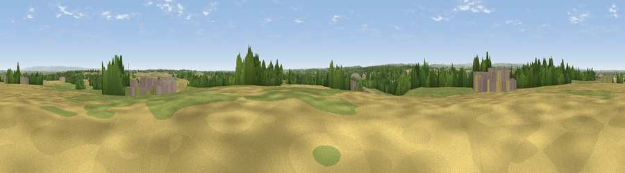

Gibbet Hill
#15780 in England · top 26% of its area beats it · near FarnhamThe view, rendered

A 360° render of this exact spot computed from the terrain model, tree cover and land cover — summer colours, afternoon light, calibrated against photographs of famous viewpoints. Real trees, hedges and buildings will differ in detail.
The panorama
Grey silhouette: terrain skyline in each direction (720 bearings, Earth curvature and refraction included). Dashed green: skyline with trees (+15 m) and buildings (+8 m) as obstacles. Blue strip: how far the ground is visible on each bearing.
Where the view opens
Wedge length = distance to the farthest visible ground on that bearing (vegetation-aware). Rings at 10, 25 and 50 km.
What fills the view
43% grassland · 34% cropland · 18% woodland · 4% built-up · 1% water
Angular shares of the visible panorama (visual magnitude), not map area. Landscape diversity 0.53 (0–1 Shannon).
Key numbers
More beautiful places nearby
The staircase of upgrades: each row has a higher view potential than everything closer. Driving times are estimates from straight-line distance, calibrated against real road routing — check an actual route before setting out.
| Place | Direction | Drive | Score |
|---|---|---|---|
| Sand Hill | E · 5 km | ~11 min | 57.5 |
| How Hill | NW · 11 km | ~21 min | 72.9 |
| Viewpoint near Grewelthorpe | NW · 22 km | ~36 min | 73.9 |
| Viewpoint near Otley | SW · 22 km | ~37 min | 77.5 |
| Hood Hill | NE · 26 km | ~42 min | 79.6 |
| Viewpoint near Thirlby | NNE · 28 km | ~44 min | 81.5 |
| Beacon Hill | NNE · 41 km | ~61 min | 84.7 |
| Carlton Bank | NNE · 45 km | ~66 min | 85.1 |
54.03419, -1.45390 · source: dobih hill · position refined by local search. Computed location — check access rights before visiting.